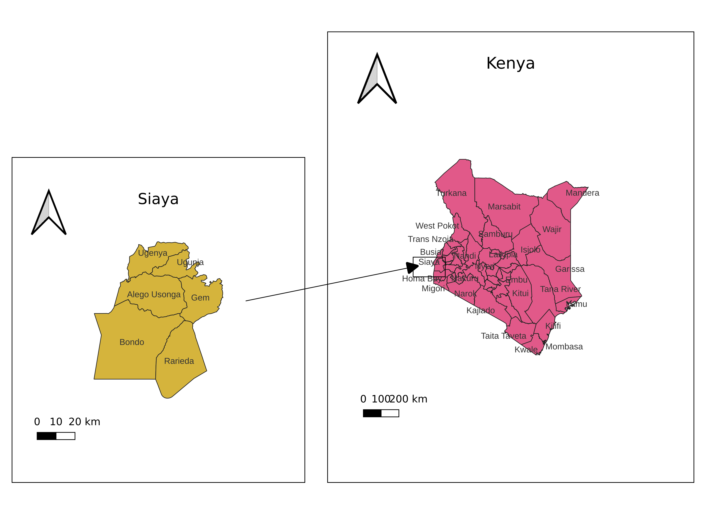

ACCESS TO CONVENTIONAL MEDICATION THROUGH HEALTH FINANCING MODELS; A CASE OF EXPECTANT TEENAGE MOTHERS IN SIAYA COUNTY, KENYA
Acronyms and Abbreviations
ETM - Expectant teenage mothers
OOP - Out-of-Pocket Payment
NHI - National Health Insurance
SDG - Sustainable Development Goals
SHIF - Social Health Insurance Fund
UHC - Universal Health Coverage
Introduction
1.1 Background to the Study
UHC, as one of the Sustainable Development Goals (SDGs) is motivated by the need to make healthcare affordable to all based on need and not the ability to afford it WHO (2010). Consequently, the available health financing models have direct implications on the ability of the poor and vulnerable to afford healthcare.
According to Ifeagwu et al. (2021), OOP and NHI are among the top health financing mechanisms in sub-Saharan Africa. OOP, as a financing mechanism, exposes the poor and vulnerable like teenagers to major challenges; the leading being the fact that teenagers are mostly not employed as they have not attained the age of majority, 18 years, which can allow them to legally and meaningfully get employed. Salari et al. (2019) established that the average OOP payment was Ksh 5613 for outpatient treatments, Ksh 1492 for inpatient treatments and Ksh 7990 for both types of treatment; all of these figures are way beyond the financial capability of most teenagers in Siaya County. Consequently, teenagers face challenges when it comes to relying on OOP as a health financing mechanism mainly because they don’t have the money to spend on their healthcare.
The challenges with OOP underscores the importance of having a National Health Insurance to cushion the vulnerable in the community. Established in 1966, the NHIF is the number one leading health financing model in Kenya covering about 25% of the population, Population and Development (2018). This model has introduced various intervention in a bid to achieve Universal Health Coverage. A major intervention with the NHIF is the Linda Mama Scheme which was introduced with the principal aim of ensuring universal access to free maternity services for expectant mothers throughout pregnancy and childbirth and thus catering to the poor and vulnerable Orangi et al. (2021). However, Orangi et al. (2021) noted the need to monitor health facilities to ensure that the poor and vulnerable are not asked for any user fees when seeking Linda mama services.
Private and community-based healthcare financing models have also come into play to fill a gap in the largely untapped market in healthcare financing. However, private healthcare financing models only take care of about 1% of the population while community-based healthcare financing models take care of less then 1% of the population in Siaya County, Lukorito and Muga (n.d.). This low enrollment into healthcare financing models in Siaya County is because of, among other factors, the informal nature of the economic activities in Siaya and Kenya as a country.
While Comfort, Peterson, and Hatt (2013) noted that there is a positive correlation between health insurance and access to maternal health services, existing literature doesn’t provide such evidence in the context of expectant teenage mothers in Siaya County. It was found that in selected counties of Western Kenya, Siaya being one of them, there was a low NHIF uptake rate of between 21 - 25 %. The study pointed out that one of the reasons for the low uptake was low level of education and low income status, which is a challenge that mainly affects teenagers since they are not meaningfully employable and besides have a low level of education, Kamano et al. (2022). It is therefore unclear how expectant teenage mothers’ access to conventional medication is affected.
1.2 Statement of the Problem
Problem statement
KNBS (2022) survey, reported that 20.9% of the girls in Siaya County between the ages of 15 - 19 years old had begun child bearing, a proportion higher than most counties in the country. This development comes against a backdrop of declining level of access to healthcare financing schemes in Siaya County Lukorito and Muga (n.d.) thus necessitating the need to investigate how health financing models have influenced expectant teenage mothers access to conventional medication.
While the literature review reveals that other studies have looked at the impact that health financing models have had on access conventional medication, special attention has not been given to expectant teenage mothers in Siaya County considering the fact that it bears a heavy burden when it comes to teenage pregnancy compared to other counties in the country.
Therefore, this study was conceived to look at how expectant teenage mothers as a vulnerable group in Siaya County have been affected in terms of access to conventional medication using various available schemes: public, private or community-based healthcare financing models considering the positive impact on health this has on the population, Comfort, Peterson, and Hatt (2013).
1.3 Research Questions
How does the health financing model influence expectant teenage mothers’ access to conventional medication in Siaya County?
How does access to conventional medication improve maternal health in Siaya County?
What socio-economic factors impede expectant teenage mothers’ access to healthcare using various health financing models in Siaya County?
1.4 Main Objective
The main objective was to investigate the influence of different health financing models on expectant teenage mothers’ access to conventional medication in Siaya County.
1.5 Objectives of the study
To investigate how health financing model influence expectant teenage mothers’ access to conventional medication in Siaya County.
To establish how access to conventional medication improves maternal health in Siaya County.
To investigate socio-economic factors that impede expectant teenage mothers’ access to healthcare using various health financing models in Siaya County.
1.6 Scope of the Study
This study will be carried out in the County of Siaya which comprises of six sub-counties: Alego Usonga, Bondo, Ugenya, Ugunja, Gem and Rarieda.
1.7 Justification for the study.
The effectiveness of health financing models need to be investigated when it comes to providing coverage for expectant teenage mothers as a vulnerable group in accessing conventional medication.
NHIF, a public health financing scheme established the Linda mama program, a flagship policy initiative aimed at improving maternal healthcare access. This initiative has however faced challenges in its implementation potentially hindering expectant teenage mothers from accessing healthcare as pointed out by Orangi et al. (2021). Currently under NHIF, Linda mama is in the process of transitioning to SHIF. However, the new UHC rules do not explicitly indicate the fate of Linda mama under SHIF, a development which could hinder expectant teenage mothers from effectively accessing conventional medication.
As Lukorito and Muga (n.d.) established private and community based financing healthcare models in Siaya County only cover less 2% of the population. This stems from the fact that the economy of Siaya is mostly informal. Besides, Siaya County is mostly a rural county and thus the poverty levels are high, hence the low enrollment into the various healthcare financing models. This factor potentially puts expectant teenage mothers at risk of not being able to access conventional medication.
These concerns therefore underscores the need to investigate how the various healthcare financing models: public (NHIF and its initiatives); private and community based healthcare financing schemes influence expectant teenage mothers’ access to conventional medication in Siaya County. This study therefore holds significant importance for various stakeholders in the healthcare sector because it will directly address the gap between policy formulation and implementation, providing insights that can inform future health financing policies and initiatives.
Besides, while existing literature acknowledges the challenges in maternal healthcare access, there is a lack of specific research focusing on the experiences of expectant teenage mothers particularly in light of a higher prevalence of teenage mothers in Siaya County as compared to other counties in Kenya: the KNBS (2022) survey reported that 20.9% of the girls between the ages of 15 - 19 years old in Siaya County had begun child bearing. This figure was way higher than most of the rest of the other counties in Kenya.
By focusing on teenage mothers, this study will fill an empirical gap in the literature. Moreover, the findings from this study will directly inform policy decisions aimed at improving maternal healthcare access and consequently outcomes in Kenya. By identifying the specific barriers faced by expectant teenage mothers and evaluating the effectiveness of different health financing models, the study will enable policymakers to design more targeted initiatives to address these challenges and advance the goal of achieving universal health coverage.
1.8 Theoretical Framework
1.9 Conceptual Diagram
Literature Review.
2.1 Introduction
This chapter establishes the state of expectant teenage mothers’ access to conventional medical using various health financing models influence . We shall evaluate the impact various health financing models have on teenage mothers’ access to conventional medication. We shall also look at the impact access to conventional medication has had on maternal health. One of the major barriers to access to healthcare is of course finances and therefore expectant teenage mothers are especially a vulnerable group because of the fact that they mostly don’t have the capacity to afford the healthcare financing models that we have in place owing to the fact that most of them haven’t attained the age of majority and are thus not employable or even eligible to start businesses.
2.2.1 The burden of teenage pregnancy in context
The general trend of teenage pregnancy in Kenya is currently on the rise. Some counties seem to be affected more than others. Siaya County is one of the counties that have reported a heavy burden and upward trend in teenage pregnancy compared to the other counties.
KNBS (2014) reported that 17.2% of the girls between the ages of 15 - 19 years old had begun childbearing while KNBS (2022) reported that 20.9% of the girls between the same age bracket in Siaya County had started childbearing. These statistics for Siaya County show a trend that demands for action on various issues sorrounding teenage pregnancy to ensure the ETM are able to access healthcare.
2.2.2 Socio-economic factors that impede ETM accessing healthcare
Kumar et al. (2018) found that expectant teenage mothers often faced challenges that made it difficult for them to access healthcare regardless of whether they were enrolled on a healthcare financing model. For example, the ETM were missing on free initiatives like Linda Mama under the NHIF or indeed the private or community-based healthcare financing models because of these challenges. Some of the challenges that stood out was social stigma and lack of emotional support from their partners or boyfriends. The meant that expectant teenage mothers lacked the motivation to visit healthcare facilities to access healthcare as some of them opted to remain at home.
The other challenge that expectant teenage mothers faced was lack of friendly services at the health facilities. While these mothers wished to access the free government services like Linda Mama, these mothers felt repulsed by the attitude of the healthcare providers who derided them. This often resulted in the mothers being unable to take advantage of these healthcare financing models especially the Linda Mama scheme that is provided under NHIF.
2.2.3 Current state of access to conventional medication using various healthcare financing models.
Kutzin et al. (2017) outlines the goals of universal health coverage that health financing can influence as: access to quality services; financing protection of the financially vulnerable and access to health services according to need. This is to be achieved through three key strategies including: more funds allocation to healthcare; improving efficiency and equity in use of funds; pooling of resources among other strategies.
Population and Development (2018) estimates that approximately 25% of Kenyans are covered by either public, private or community based healthcare financing schemes. This means that a significant percentage of the population still remain uncovered and are left to rely on OOP thus making healthcare inaccessible to a lot of people. KNBS (2022) survey found that NHIF, a public health insurance scheme is the commonest, covering approximately 24% of Kenyans. Private health insurance schemes on the other hand covered approximately 1% while community based insurance schemes covered less than 1% of the population. This survey also found that enrollment in health financing schemes is higher in urban communities compared to rural communities. Siaya County, being a mostly rural county would be expected to have less enrollment compared to the national average. This undoubtedly places vulnerable groups like expectant teenage mothers in Siaya County in a precarious position when it comes to accessing healthcare.
While investigating the characteristics that influence enrollment into healthcare financing models in Siaya County, Lukorito and Muga (n.d.) found that level of education, marital status, household size and source of income were some of the main socio-economic factors influencing enrollment into healthcare financing schemes.
2.2.4 Access to conventional medication vis-à-vis teenage pregnancy
While expectant teenage mothers’ below the age of 18 years are considered dependants and therefore able to access conventional medication using membership of their parents in various healthcare financing schemes, it is important to point out that this may not always be the case. This is because some of them face social challenges like social stigma among other challenenges as elucidated above. This means that being enrolled in a healthcare financing model does not necessarily guarantee that ETM will be able to access healthcare, Kumar et al. (2018).
Besides facing these same social challenges when access healthcare, ETMs who are 18 years and above are faced with the extra challenge that they are not able to rely on their parents healthcare financing model since they are now adults. A majority of them have a lot of financial challenges in being able to access healthcare financing models because they aren’t employed yet having just entered the job market.
2.3 Gaps Identified
Considering the increasing trend of teenage pregnancy prevalence in Siaya County and the challenges that ETMs face in accessing healthcare, it is important to look at how various healthcare financing models have affected this vulnerable group’s access to conventional medication in light of the challenges that they face.
2.4 Conclusion
The Constitution of Kenya (2010) states that every Kenyan has a right to quality and affordable healthcare. This study will therefore establish how effectively the available healthcare financing models have served Kenyans, especially the vulnerable like the expectant teenage mothers. The findings of this study will inform policy by identifying any gaps that need to be addressed.
CHAPTER THREE
RESEARCH METHODOLOGY
3.1 Introduction
This chapter is a presentation of the overall research methodology that this study relies on. We shall specifically look at the research design, study area, study population, inclusion criteria, sampling technique and sample size, validity, data collection techniques and the ethical considerations of the study.
3.2 Research Design
A research design is the overall strategy encompassing data collection and analysis to answer the research questions. Orodho (2003). In this study, qualitative data collection and analysis methods are employed.
The decision to use qualitative research methods for the purposes of this study will enable the researcher to understand how health financing models influence expectant mothers’ access to conventional medication in Siaya County as the respondents will be able to express the challenges that they are experiencing.
3.3 Study Area
Siaya County in Western Kenya has a surface area of approximately 2530 km2. The County is approximately between latitude 0° 26´ South to 0° 18´ North and longitude 33° 58´ and 34° 33´ East. Administratively, Siaya County consists of six sub-counties and thirty wards. The sub-counties of Alego Usonga, Bondo and Gem each have six wards while Rarieda, Ugenya and Ugunja sub-counties have five, four and three wards respectively. GOK (2012)
KNBS (2019) census put the population of Siaya County at 993,183 people. Of those, 471669 were males while 521498 were females.
The main economic activities in Siaya County include fishing, subsistence farming, livestock keeping, rice farming and small scale trading, Infotrak (2024).

3.4 Study Population
The population of this study is the expectant teenage mothers in Siaya County while the unit of analysis is the expectant teenage mother in Siaya County.
3.4.1 Inclusion Criteria
For this study, only teenage girls who were expectant were included. Being a resident in the county for the last six months was also a requirement for one to be eligible.
3.5 Sampling Techniques and Sample Size
Snowball sampling was relied on to identify expectant teenagers to be interviewed. According to Gilbert and Stoneman (2015), snow ball sampling is suitable for identifying participants who in this case are shy to participate in a research study. In light of this, community health promoters, teachers and healthcare workers were enlisted to assist. These professionals provided the guidance on how to reach expectant teenage mothers. Using the snowball sampling technique, twenty expectant teenage mothers agreed to participate in the study.
After recruitment, interviews with the expectant teenage mothers were conducted were conducted in spaces where confidentiality was ensured and the participants were comfortable.
3.6 Validity
Cognizant of the constraints in resources the study faces, it was found imperative to rely on more than one source of information. Thus, in addition to interviews, the study also relied on secondary sources of information to make the findings valid and reliable.
3.7 Data Collection Techniques
The data collected was qualitative and thus relied on the following sources of information.
3.7.1 In-depth interviews(IDIs)
The primary technique of data collection for this study was in-depth interviews using the IDI guide that was developed for purposes of data collection. Since respondents are not limited to a pre-designed set of responses, in-depth interviews have the capacity to bring out detailed and rich information about the study question. Creswell and Creswell (2017)
The interviews were conducted in places that ensured confidentiality of the participants. With the consent of the study participants, the interviews were recorded for later transcription. Transcripts that needed to be translated were translated accordingly.
3.7.2 Key informant interviews(KIIs)
Key informant were identified. These included clinical officers and nurses. The key informants were purposively selected to include those who interacted with expectant teenagers and thus more likely to have more information on the research question. The key informants shared their views on the research questions guided by a KII guide.
3.7.3 Secondary sources
The study also relied on secondary sources of information. These included relevant books, reports and publications related to the research questions. These materials were used to enrich the information obtained from the study findings, Ajayi (2017).
3.8 Data Analysis and Presentation
Since the data collected through in-depth interviews and key informant interviews was recorded in audio tapes, it was transcribed into verbatim in the language it was done. Where necessary, the data was translated from Dholuo to English.
The process of transcription was done on a rolling basis starting as soon as the first interview was completed. This continued until the final interview was completed. Upon completion, thorough checking was done to ensure accuracy and clarity.
Coding and thematic analysis was done using Nvivo 12 software. Verbatim quotes from study participants were added to emphasize the findings of the study.
3.9 Ethical considerations
The study participants were informed about the objectives of the study. Subsequently, informed consent was obtained from all the study participants. For the study participants who were below the age of eighteen years old, written informed consent was obtained from their guardians. Voluntary participation was emphasized as the study participants were reminded that they were free to withdraw from the study at any point without facing any sort of penalties whatsoever. The study also made it clear that none of the study participant’s confidentiality would be breached as the audios and subsequent information obtained would be de-linked from their identity. These considerations are especially critical for vulnerable study participants as it was the case in this study, Ketefian (2015).